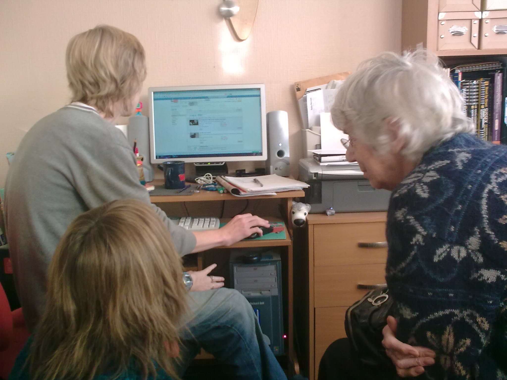
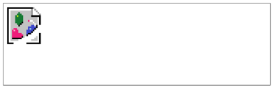
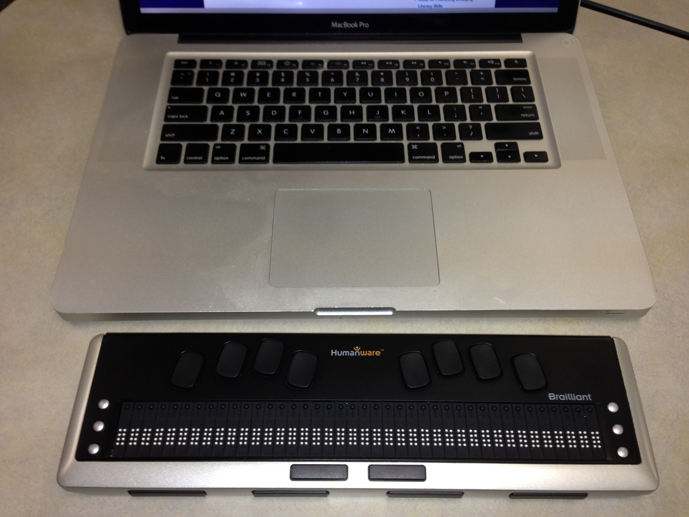

Intro to Web Accessibility
Who am I?
- Robert Fentress
Sr. Web Accessibility Solutions Designer, Virginia Tech
Objectives
- Disabilities, assistive technologies, and the web
- Laws and standards
- Techniques for accessible design
- Strategies for making progress
Activity 1: Install Web Disability Simulator
Do Activity 1 at:
https://tinyurl.com/AxsAct
What is web accessibility?
The power of the web is in its universality. Access by everyone regardless of disability is an essential aspect.
Motivations
15% Disabled

The Virtue of Selfishness
- Well, maybe not exactly like that
- Have you ever had...?
Broken wrist/carpal tunnel

No mouse
A baby

Screen in sunlight

Shhhhh!

Don't do this!
Tech support
That's you

Why care?
- Enlightened self-interest
- Helps broaden your audience
- Because you're not a jerk
- Law and standards
Law
- Rehabilitation Act of 1973
- Americans with Disabilities Act
- Other state and local requirements
Standards
- Web Content Accessibility Guidelines 2.0 (WCAG)
- WCAG 2.1 released in June 2018
- Accessible Rich Internet Applications 1.1 (WAI-ARIA)
- Authoring Tool Accessibility Guidelines 2.0 (ATAG)
Web Content Accessibility Guidelines
- 4 Design Principles:
Perceivable, Operable, Understandable, and Robust- Contain 12 Guidelines
- Testable success criteria
- Each criteria at level A, AA, AAA
- Testable success criteria
- Contain 12 Guidelines
WCAG Example
-
Principle 1 – Perceivable: Information and user interface components must be presentable to users in ways they can perceive.
-
Guideline 1.3 – Adaptable: Create content that can be presented in different ways (for example simpler layout) without losing information or structure.
-
Success Criterion 1.3.1 – Info and Relationships (Level A): Information, structure, and relationships conveyed through presentation can be programmatically determined or are available in text.
Types of Disabilities
- Visual
- Auditory
- Cognitive
- Motor
- Seizure
- Multiple
Blindness
Screen Readers
What's going on?
What did you miss?
Better?
Audio Description Resources
- YouDescribe: Easy online tool for adding audio descriptions to YouTube videos.
- Audio Description Project Guidelines for Good Describing
Screen Reader Demo
Do you see what I see?
This is what a blind person "sees" unless you provide a text alternative
Alternate text
<img src="broke.png" alt="broken image icon" />WAI Image concepts tutorial
Link text
Link text should describe purpose.
- Avoid "click here" or "read more".
- "Read more about x" is better.
- Image links describe purpose too
<a href="arbor-day.html">
<img scr="tree.jpg" alt="Arbor Day Sale">
</a><a href="arbor-day.html">
<img scr="tree.jpg" alt="">
<span class="sr-only">Arbor Day Sale</span>
</a>Page Regions
<header role="banner"> </header><nav role="navigation" aria-label="site">…</nav>
<nav role="navigation" aria-label="page">…</nav><main role="main">…</main><aside role="complementary">…</aside><section role="region">…</section><footer role="contentinfo">…</footer><div role="search">…</div>Headings
Headings Non-Example
<p style="font-size:140%"><b>Citylights News<b></p>
<p style="font-size:120%"><b>Heat wave linked to temperatures<b></p>
<p style="font-size:110%"><b>Tough Wahoonie<b></p>Headings Example
<h1>Citylights News</h1>
<h2>Heat wave linked to temperatures</h2>
<h3>Tough Wahoonie</h3>Tables
Table Non-Example
<td><b>macOS</b></td><!--...-->
<td><b>Magnification</b></td><!--...-->Table Example
<table border="1">
<caption>Assistive Technologies Matrix</caption><!--...-->
<th scope="col">macOS</th><!--...-->
<th scope="row">Magnification</th><!--...-->Page Title
<head><title>My presentation</title></head>Language
Language of Page
<html lang=“en”>Language of Parts
<blockquoute lang=“es”>Language Demos
Reading Order
- What is wrong
with this?
- Code order should match visual presentation (usually)
- Better reading order
Labels or Instructions
Labels Non-Example
<div>Name: <input type="text" name="name"></div>Labels Example
<div>
<label for="name">Name: (required)</label>
<input id="name" type="text" name="name" required>
</div>Low Vision
Assistive Tech & Strategies
- Screen Magnifiers
- Text-to-Speech
- Color and contrast enhancements
- Pointer and cursor enhancements
Zoom Text
Activity 2: Color Blindness Demo
Do Activity 2 at:
https://tinyurl.com/AxsAct
Color Blindness
AT & Strategies

Testing Contrast
Deaf & Hard of Hearing
- Captions for video
- Transcripts for audio
Captions
Adding Captions
Deaf-blind
Refreshable Braille Display Demo
Deaf-Blind Requirements
Generally the same as for Blindness and Deafness, but also should have transcripts for video.
Activity 3: Cognitive Demo
Do Activity 3 at:
https://tinyurl.com/AxsAct
Cognitive Disabilities
- Memory
- Problem-solving
- Attention
- Reading, linguistic, and verbal comprehension
- Math comprehension
- Visual comprehension
Assistive Tech & Strategies
- Assisted Reading Software
- Text-to-speech
- Screen masking
- Simplification
- Change font
- Captions
- Audio descriptions
- Transcripts
Write Readable Text
- Chunk in sections
- Use descriptive subheadings
- Use visuals to break up text and improve comprehension
- Don't waste readers' time
- Write at an 8th-grade level (Test readability and summarize)
- Use capital letters sensibly
Write Readable Text (More)
- Avoid italics, cursive and decorative fonts
- Use large font sizes
- Be generous with spacing
- Make content printer-friendly
- Use sufficient text-to-background contrast
- Minimize line and paragraph length & use bulleted/numbered lists
Other Techniques
- Minimize Distractions
- Use multiple means of representation
- Avoid font icons
Activity 4: Motor Demo
Do Activity 4 at:
https://tinyurl.com/AxsAct
Motor
- Mouth stick
- Head pointers
- Switches
- Speech Recognition
- Text prediction
Speech Recognition
Keyboard Navigation
Seizure disorders
Don't flash more than 3 times a second
See Pokemon clip for an example.
If you're sure you don't have photosensitive epilepsy.
Testing and Checklists
Sites to test
- Accessible University
- Before and After Demonstration
- Office Supply
a11yCasts quick checks
- Tab through page and interact with controls
- Keyboard access and focus highlights
- Perform simple check with screen reader (VoiceOver or NVDA)
- Headings, landmarks, labels
- Use aXe Chrome extension to catch color
- Use Chrome Inspector to check (and adjust) colors
Resources
- Presentation Resources: https://profdev-lms.tlos.vt.edu/courses/528/li>
- Contact me, Rob Fentress, at learn@vt.edu